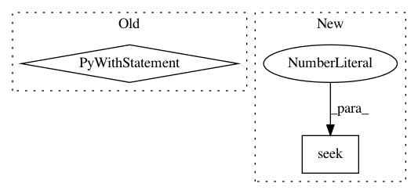

5aa0e65747cd13c072749cbc7364f61bd149cadf,python/src/nnabla/utils/save.py,,save,#Any#Any#Any#Any#Any#,520
Before Change
save("{}/network.nntxt".format(tmpdir),
contents, include_params=False, variable_batch_size=variable_batch_size)
with open("{}/nnp_version.txt".format(tmpdir), "w") as file:
file.write("{}\n".format(nnp_version()))
save_parameters("{}/parameter.protobuf".format(tmpdir))
with get_file_handle_save(filename, ext) as nnp:
nnp.write("{}/nnp_version.txt".format(tmpdir),
After Change
version = io.StringIO()
version.write("{}\n".format(nnp_version()))
version.seek(0)
param = io.BytesIO()
save_parameters(param, extension=".protobuf")
param.seek(0)
In pattern: SUPERPATTERN
Frequency: 3
Non-data size: 2
Instances
Project Name: sony/nnabla
Commit Name: 5aa0e65747cd13c072749cbc7364f61bd149cadf
Time: 2020-03-24
Author: Yuchi.Wen@sony.com
File Name: python/src/nnabla/utils/save.py
Class Name:
Method Name: save
Project Name: catalyst-cooperative/pudl
Commit Name: 560c741511f3c5e7b496809c3a174953cd8241c6
Time: 2018-06-15
Author: karldw@users.noreply.github.com
File Name: pudl/load.py
Class Name:
Method Name: _csv_dump_load
Project Name: SheffieldML/GPy
Commit Name: fa658fb6221bce1a8e571f0dbc95e588a531479a
Time: 2015-10-10
Author: ibinbei@gmail.com
File Name: GPy/testing/pickle_tests.py
Class Name: Test
Method Name: test_parameter_index_operations